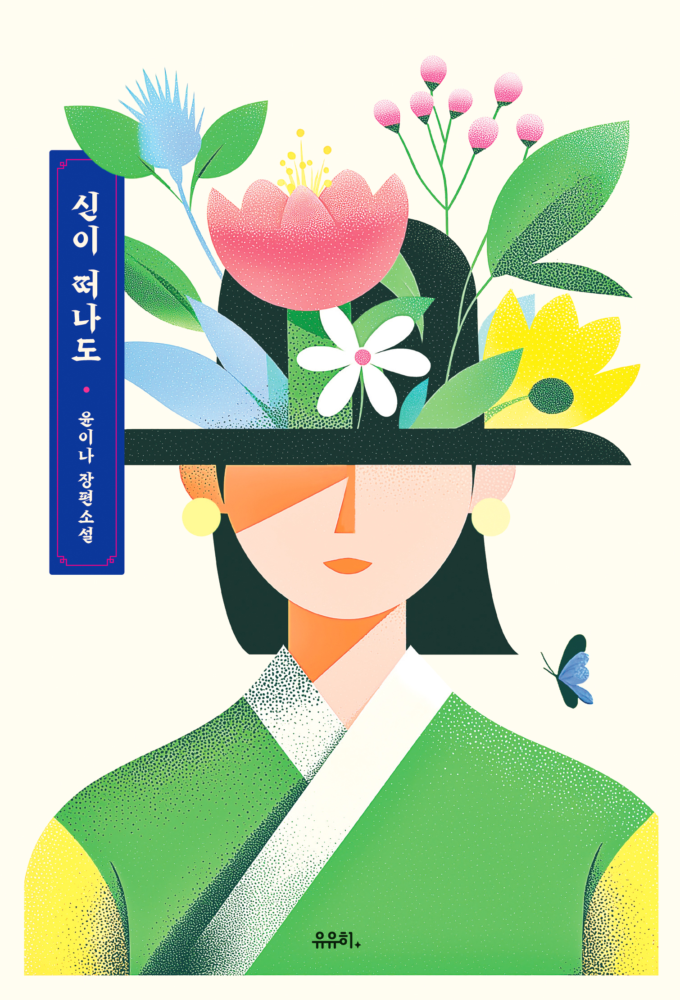

Escribiendo las historias que comienzan después del final
como escritor (19 años)
Guionista de dramas 2017 - Presente
Guion del Serie de televisión JTBC ‘Alguien que puedes conocer’
Transmitido en Naver TV Cast del 31 de julio al 11 de agosto de 2017
y especial durante Chuseok el 2 de septiembre en JTBC
Guionista de entrevistas 2015 - Presente
especializado en entrevistas de cine
Guionista de actor para la revista [MubMub] de CJ (Ago 2017~Ene 2018)
Guionista de entrevistas [Conociendo al actor] para Naver V (2015~Ene 2017)
Columnista de TV, cultura popular y cine 2008 - Presente
Contribuciones y conferencias relacionadas en numerosos medios
Principales diarios: Korea Daily, Hankyoreh, etc.
Revistas: GQ, Harper's Bazaar, W, Cine21, PD Journal, etc.
Entre otros
Planificación y ejecución de contenido
Podcast [Sisterhood] (Oct 2018~Ene 2023)
Editora revista diaria SIWFF (Jun 2016)
Reportera del diario en coreano de KOBIZ (Ago 2014~May 2015)
Seúl, Universidad Sungkyunkwan 2002.3 – 2006.8
Licenciatura en Literatura y Lengua Coreana / Comunicación 및 Medios
Cyber Hankuk University of Foreign Studies 2025 – Presente
Licenciatura en Español (transferencia, tercer año)
* actualmente en pausa académica
🇬🇧 Inglés
Capaz de mantener conversaciones cotidianas
Residencia de 1 año en Brisbane, 6 meses en Melbourne (visa WH)
🇪🇸 Español Nivel A2
según Duolingo, más de 1200 días
capaz de mantener conversaciones básicas
capaz de leer noticias relacionadas con el fútbol
🏆 Alguien que puedes conocer
Premio de Oro
en la categoría de Drama Especial de TV
en el ‘Festival Internacional de Cine de Houston’ 2018
Gran Premio
en los ‘Premios del Festival Internacional de Contenidos Web de Busan’ 2018



✉️ yooninas@gmail.com
📱 +82 10-8861-2154
🏠 Seúl, Corea